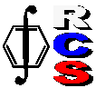

 |
Российское
хемометрическое общество и
выставочный холдинг MVK
19 апреля 2005 года |
|
- в рамках выставки
Analytica Expo 2005 проводят
конференцию:
Хемометрика
и контроль производственных процессов
|
Time |
Программа |
Презентация |
Program |
|
12:00-12:30 |
А.Л. Померанцев (ИХФ РАН, Москва)
Хемометрика и контроль
производственных процессов |
|
A. Pomerantsev (Institute of Chemical Physics, Moscow)
Chemometrics and process control - introduction |
|
12:30-14:00
|
Р. Бреретон (Университет Бристоля,
Великобритания)
Введение в хемометрику
|
|
R. Brereton (University of Bristol, UK)
Introduction to Chemometrics
|
|
14:00-14:30 |
Обед |
|
Lunch |
|
14:30-16:00
|
Р. Бреретон (Университет Бристоля,
Великобритания)
PAT - Технология (методы) анализа процессов
|
|
R. Brereton (University of Bristol, UK)
PAT - Methods and examples of real-world applications
|
| 16:00-16:15 |
Перерыв |
|
Break |
| 16:15-16:45 |
А.Ю. Богомолов (EMBL, Germany),
П.К. Берзигияров (InterProgma, Черноголовка)
Математическое и программное
обеспечение для аналитического
контроля производственных процессов (MSPC/PAT):
перспективы разработки и внедрения в
России |
|
A. Bogomolov (EMBL, Germany)
P. Berzigiyarov (InterProgma, Chernogolovka)
Software for process analytical technology (MSPC/PAT):
design and implementation prospects |
| 16:45-17:45 |
В.И. Вершинин (Омский ГУ)
Метрологические оценки неопределенности в качественном анализе |
|
V. Vershinin (Omsk State University)
Metrological uncertainty estimations in qualitative analysis |
Место проведения
Конференция будет проходить в
конференц-зале выставочного павильона КВЦ
"Сокольники" по адресу:
Москва, Сокольнический вал, 1 пав. 4
Проезд
м. Сокольники, КВЦ "Сокольники",
пав. 11, 3А, 2, 4
От метро - бесплатный автобус

Последняя модификация: 28.05.13 .